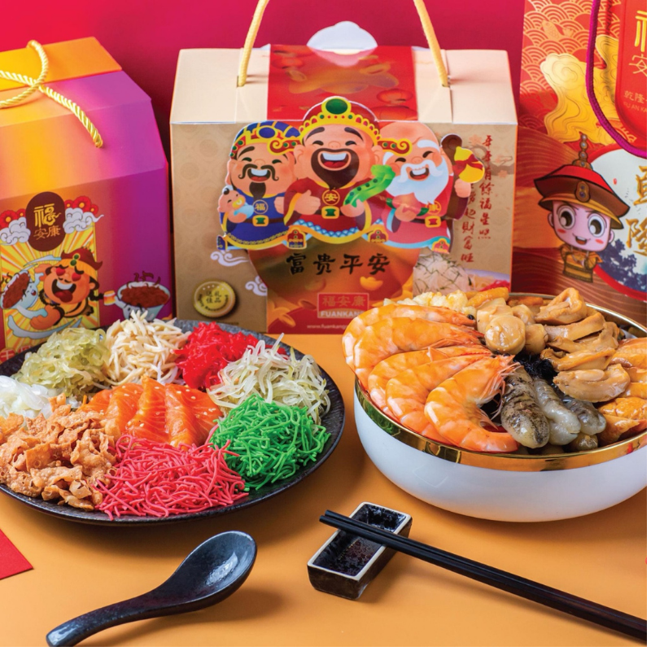
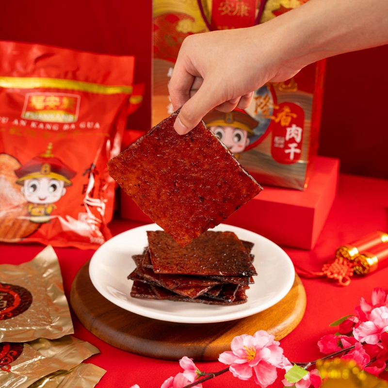
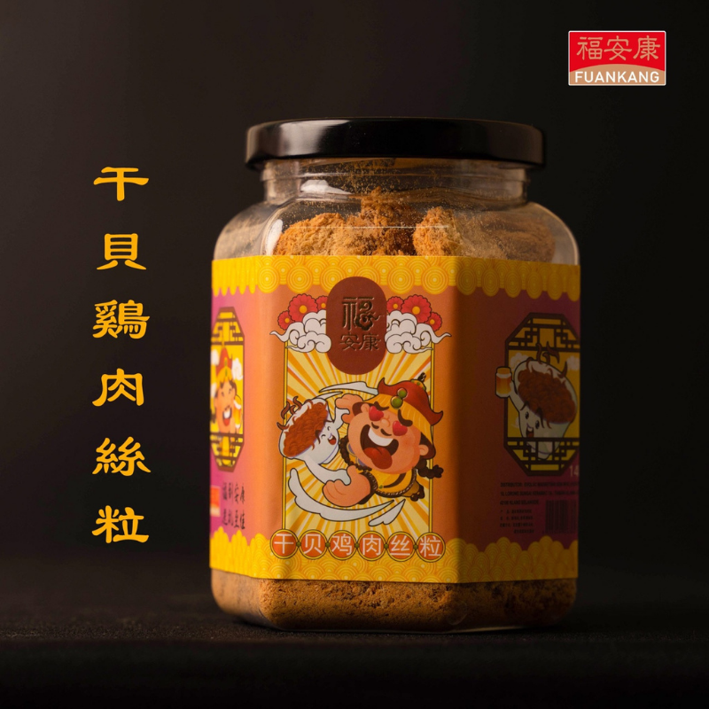
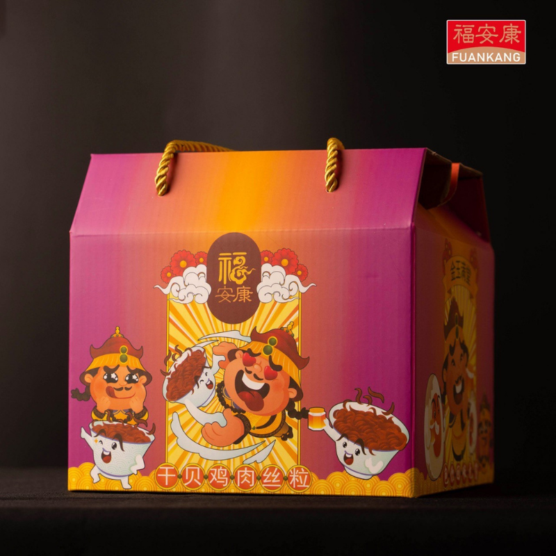
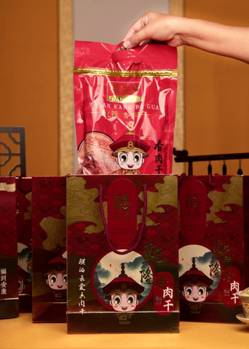
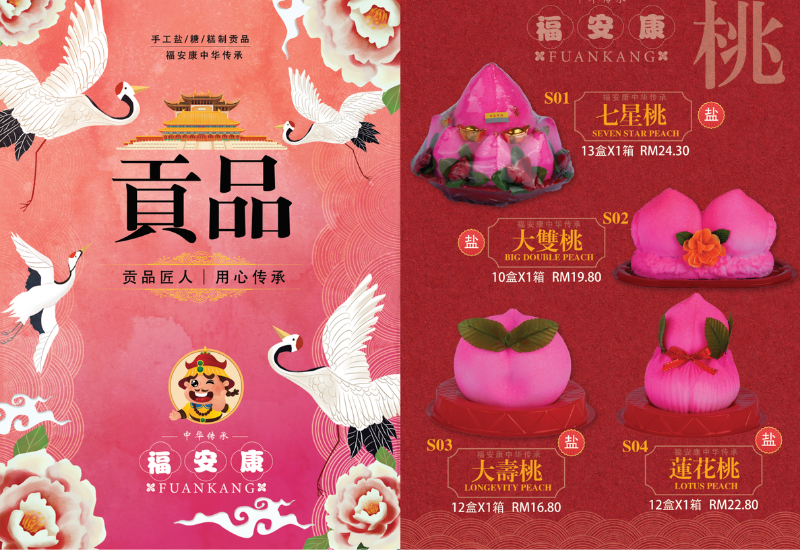

Ran a full-stack CNY food brand under a parent company — from supply chain to shelf. A real test of what it means to operate alone across every function.
5+
Product Lines
1 Yr
Full Operations
CEO
Solo Role
Scroll to read
Year
2022–2023
Duration
~1 year
Parent Co.
Evoluc Marketing
Role
CEO (Full-ops)
Team
2–3 people
Background
One brand. Five product lines. One person running all of it.
Under Evoluc Marketing, I took full ownership of 福安康食品 — a CNY food brand covering bak kwa, nuts & dried fruits, meat floss biscuits, and offering items. My mandate as CEO wasn't just strategy — it was literally everything: procurement, inventory, accounts, sales, and distribution coordination.
No big team. No division of labour. This was a lean operation where I wore every hat every day for a year.
The Brand
A one-stop CNY purchase — 5 lines, one brand
The positioning: quality-assured, price-accessible, all-in-one CNY shopping. Instead of competing with century-old brands on prestige, we offered variety and reliability under one roof.
肉干 Bak Kwa
Core SKU
坚果 Nuts & Dried Fruit
Mid SKU
肉松饼 Meat Floss Biscuit
Growing
贡品 Offering Items
Niche
Annual Gift Sets
Seasonal
The one-stop appeal was real. But 5 lines also meant no single product could be a breakout star — resources spread thin, no hero SKU to drive brand memory.
Product Photography




Full Operations
What "CEO of a food brand" actually looks like
This wasn't a strategy role. It was ground-level operations. I managed every function that keeps a physical product brand running.
📦
Procurement & Supply Chain
Negotiated with multiple suppliers on price, quality standards, and lead times. Coordinated seasonal bulk purchasing 1–2 months before CNY.
🏭
Inventory Management
Managed inbound & outbound stock, warehouse coordination with Evoluc's system, and demand forecasting to avoid overstocking in low season.
📊
Financial Accounting
Tracked COGS, sales revenue, margins by product line. Monthly reconciliation with the parent company. Every ringgit in and out documented.
🚚
B2B Distribution
Primary channel was Evoluc's distributor network. Coordinated agent orders, delivery scheduling, and channel support. No direct-to-consumer play.
Packaging & Campaign Materials


The Seasonality Problem
12 months of work. 2 months of sales.
CNY food brands live and die by seasonal spikes. The reality of running 福安康: two months of intense demand (Jan–Feb), then near-total silence the rest of the year. This is not a theory — it shapes every decision from procurement to cashflow.
Jan
Feb
Mar
Apr
May
Jun
Jul
Aug
Sep
Oct
Nov
Dec
1
Seasonal ceiling — without a "famous" brand name, there's no way to grow the CNY category itself.
2
B2B only — no D2C channel means no brand equity buildup with end consumers.
3
5 SKUs spread thin — energy divided, no hero product to anchor brand memory.
4
Parallel projects — under Evoluc, I couldn't give 福安康 full attention. It was one of many.
How It Ended
Not a crash. A slow fade.
福安康食品 didn't fail dramatically. It just… stopped receiving attention. As Evoluc's strategy shifted and other projects demanded more focus (eventually the Heewon APP), the food brand was quietly deprioritized.
There was no shutdown moment — just a gradual withdrawal of time, investment, and energy. The business returned its costs without a major loss. It was a warm, quiet exit.
Honest Assessment
The sales were moderate — enough to justify the operation, not enough to call it a success. The real issue wasn't execution — it was the business model. A seasonal B2B brand with no social presence, no hero product, and no focused attention is structurally limited no matter how well it's operated.
What I Learned
Full-ops solo teaches things that strategy jobs never will.
Real experience with multi-SKU management and seasonal forecasting
B2B distribution relationships and channel negotiation
Financial literacy under real P&L pressure
✗ What Was Missing
No brand differentiation — in a commodity category without a USP
No D2C — relying only on B2B meant no consumer brand equity
Too many SKUs — diluted focus, no breakout product
Divided attention — one of 5+ Evoluc projects running in parallel
"Seasonal products have a hard ceiling unless you're a legacy brand. The first instinct should be to pick one product, go deep, build a story around it, and win D2C before worrying about distribution. We did it backwards — and paid the price in forgettability."